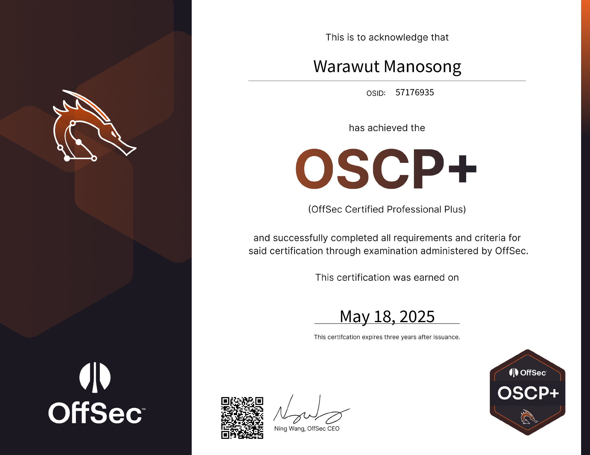

<!DOCTYPE html>
<html lang="en">
<head>
    <meta charset="UTF-8">
    <meta name="viewport" content="width=device-width, initial-scale=1.0">
    <title>Passed OSCP+ as a Blue Teamer — What It Took? | Chicken0248</title>
    <meta name="description" content="A review of my OSCP+ certification journey as a blue teamer and GRC analyst — covering how I got a free bootcamp, my one-month crash preparation, the exam experience, and honest tips on whether OSCP is worth pursuing." />
    <meta property="og:type" content="article" />
    <meta property="og:site_name" content="Chicken0248" />
    <meta property="og:url" content="https://chickenloner.github.io/reviews/oscp/" />
    <meta property="og:title" content="Passed OSCP+ as a Blue Teamer — What It Took?" />
    <meta property="og:description" content="A review of my OSCP+ certification journey as a blue teamer and GRC analyst — covering how I got a free bootcamp, my one-month crash preparation, the exam experience, and honest tips on whether OSCP is worth pursuing." />
    <meta property="og:image" content="https://chickenloner.github.io/reviews/oscp/cover.png" />
    <meta name="twitter:card" content="summary_large_image" />
    <meta name="twitter:site" content="@Chicken_0248" />
    <meta name="twitter:title" content="Passed OSCP+ as a Blue Teamer — What It Took?" />
    <meta name="twitter:description" content="A review of my OSCP+ certification journey as a blue teamer and GRC analyst — covering how I got a free bootcamp, my one-month crash preparation, the exam experience, and honest tips on whether OSCP is worth pursuing." />
    <meta name="twitter:image" content="https://chickenloner.github.io/reviews/oscp/cover.png" />
    <link rel="icon" href="/chicken0248.png" type="image/png">
    <script src="https://cdn.tailwindcss.com"></script>
    <script crossorigin src="https://unpkg.com/react@18/umd/react.production.min.js"></script>
    <script crossorigin src="https://unpkg.com/react-dom@18/umd/react-dom.production.min.js"></script>
    <script src="https://unpkg.com/@babel/standalone/babel.min.js"></script>
    <script src="https://unpkg.com/lucide@latest"></script>
    <style>
        @keyframes fadeIn {
            from { opacity: 0; transform: translateY(20px); }
            to   { opacity: 1; transform: translateY(0); }
        }
        .animate-fadeIn { animation: fadeIn 0.5s ease-out; }

        /* ── DARK MODE ── */
        .dark.min-h-screen { background: linear-gradient(135deg, #0f172a 0%, #141f35 50%, #0a1628 100%) !important; }
        .dark nav { background-color: rgba(15,23,42,0.96) !important; border-bottom-color: rgba(51,65,85,0.5) !important; }
        .dark .bg-white    { background-color: #1e293b !important; }
        .dark .bg-gray-50  { background-color: #0f172a !important; }
        .dark .bg-gray-100 { background-color: #334155 !important; }
        .dark .bg-orange-50  { background-color: rgba(234,88,12,0.10) !important; }
        .dark .bg-orange-100 { background-color: rgba(234,88,12,0.20) !important; }
        .dark .bg-amber-50   { background-color: rgba(245,158,11,0.10) !important; }
        .dark .bg-blue-50    { background-color: rgba(37,99,235,0.12) !important; }
        .dark .bg-green-50   { background-color: rgba(22,163,74,0.10) !important; }
        .dark .text-gray-800 { color: #e2e8f0 !important; }
        .dark .text-gray-700 { color: #cbd5e1 !important; }
        .dark .text-gray-600 { color: #94a3b8 !important; }
        .dark .text-gray-500 { color: #64748b !important; }
        .dark .text-gray-400 { color: #475569 !important; }
        .dark .text-orange-600 { color: #fb923c !important; }
        .dark .text-orange-700 { color: #fb923c !important; }
        .dark .text-blue-600   { color: #60a5fa !important; }
        .dark .text-green-700  { color: #4ade80 !important; }
        .dark .border-gray-100 { border-color: #334155 !important; }
        .dark .border-gray-200 { border-color: #475569 !important; }
        .dark .border-orange-200 { border-color: rgba(234,88,12,0.3) !important; }
        .dark .hover\:bg-gray-50:hover { background-color: #1e293b !important; }
        .dark .hover\:text-blue-600:hover { color: #60a5fa !important; }
        .dark ::-webkit-scrollbar       { width: 6px; }
        .dark ::-webkit-scrollbar-track { background: #0f172a; }
        .dark ::-webkit-scrollbar-thumb { background: #334155; border-radius: 3px; }
    </style>
</head>
<body>
    <div id="root"></div>

    <script type="text/babel">
        const { useState, useEffect, useRef } = React;

        const Icon = ({ name, className = "w-6 h-6", ...props }) => {
            const ref = useRef(null);
            useEffect(() => {
                if (ref.current) {
                    const el = lucide.createElement(lucide[name], { class: className });
                    ref.current.innerHTML = '';
                    ref.current.appendChild(el);
                }
            }, [name, className]);
            return <i ref={ref} className={`flex-shrink-0 ${className}`} {...props}></i>;
        };

        /* ── Reusable Components ── */

        const Section = ({ id, title, icon, children }) => (
            <section id={id} className="scroll-mt-24">
                <h2 className="text-2xl font-bold text-gray-800 mb-5 flex items-center gap-3 border-b border-gray-200 pb-3">
                    <Icon name={icon} className="w-6 h-6 text-orange-600" />
                    {title}
                </h2>
                <div className="space-y-4">{children}</div>
            </section>
        );

        let figCount = 0;
        const resetFigCount = () => { figCount = 0; };

        const Fig = ({ src, alt }) => {
            figCount += 1;
            const n = figCount;
            return (
                <figure className="my-5">
                    
                    <figcaption className="text-center text-xs text-gray-400 mt-1.5 font-mono">Figure {n}</figcaption>
                </figure>
            );
        };

        const Callout = ({ color = "orange", children }) => {
            const styles = {
                orange: "bg-orange-50 border-orange-400 text-gray-700",
                amber:  "bg-amber-50  border-amber-400  text-gray-700",
                blue:   "bg-blue-50   border-blue-400   text-gray-700",
                green:  "bg-green-50  border-green-400  text-gray-700",
            };
            return (
                <blockquote className={`border-l-4 rounded-r-xl px-5 py-4 my-4 italic text-sm leading-relaxed ${styles[color]}`}>
                    {children}
                </blockquote>
            );
        };

        const TipList = ({ items }) => (
            <ul className="list-disc list-outside ml-5 space-y-2 text-gray-700">
                {items.map((item, i) => <li key={i}>{item}</li>)}
            </ul>
        );

        const B = ({ children }) => <strong className="text-gray-800">{children}</strong>;
        const A = ({ href, children }) => (
            <a href={href} target="_blank" rel="noopener noreferrer"
               className="text-blue-600 hover:underline">{children}</a>
        );
        const Code = ({ children }) => (
            <code className="bg-gray-100 px-1.5 py-0.5 rounded text-sm font-mono">{children}</code>
        );

        const renderStars = (rating) => {
            const full = Math.floor(rating);
            const half = rating - full >= 0.5;
            return '★'.repeat(full) + (half ? '½' : '') + '☆'.repeat(5 - full - (half ? 1 : 0));
        };

        /* ── Timeline Item ── */
        const TimelineItem = ({ date, children }) => (
            <div className="flex gap-4">
                <div className="flex flex-col items-center">
                    <div className="w-3 h-3 rounded-full bg-orange-400 mt-1 flex-shrink-0" />
                    <div className="w-0.5 bg-orange-200 flex-1 mt-1" />
                </div>
                <div className="pb-6">
                    <span className="text-xs font-mono text-orange-600 font-semibold">{date}</span>
                    <div className="text-gray-700 mt-0.5">{children}</div>
                </div>
            </div>
        );

        /* ── App ── */

        const App = () => {
            const [dark, setDark] = useState(() => localStorage.getItem('darkMode') === 'true');
            const [meta, setMeta] = useState(null);
            useEffect(() => { localStorage.setItem('darkMode', dark); }, [dark]);

            useEffect(() => {
                fetch('/data/reviews.json')
                    .then(r => r.json())
                    .then(data => {
                        const entry = data.find(r => r.url === '/reviews/oscp/index.html');
                        if (entry) setMeta(entry);
                    })
                    .catch(() => {});
            }, []);

            resetFigCount();

            const tocItems = [
                { id: 'introduction',    label: 'Introduction',              icon: 'BookOpen'      },
                { id: 'preparation',     label: 'Preparation',               icon: 'ListChecks'    },
                { id: 'exam-experience', label: 'Exam Experience',           icon: 'ClipboardList' },
                { id: 'tips',            label: 'Tips & Key Takeaways',      icon: 'Lightbulb'     },
            ];

            return (
                <div className={`min-h-screen bg-gradient-to-br from-slate-50 via-orange-50 to-red-50 ${dark ? 'dark' : ''}`}>

                    {/* Navigation */}
                    <nav className="sticky top-0 z-50 bg-white/80 backdrop-blur-md border-b border-gray-200 px-4 py-3">
                        <div className="max-w-4xl mx-auto flex items-center justify-between">
                            <div className="flex items-center gap-2 text-sm flex-wrap">
                                <a href="/" className="flex items-center gap-2 hover:opacity-80 transition-opacity">
                                    
                                    <span className="font-bold text-gray-800 hidden sm:inline">Chicken0248</span>
                                </a>
                                <span className="text-gray-400">/</span>
                                <a href="/reviews/index.html" className="font-medium text-gray-600 hover:text-blue-600 transition-colors">Reviews</a>
                                <span className="text-gray-400">/</span>
                                <span className="font-semibold text-gray-700">OSCP+</span>
                            </div>
                            <button onClick={() => setDark(!dark)}
                                className="p-2 rounded-lg hover:bg-gray-100 text-gray-600 transition-colors text-lg">
                                {dark ? '\u2600\uFE0F' : '\uD83C\uDF19'}
                            </button>
                        </div>
                    </nav>

                    <main className="max-w-4xl mx-auto px-4 py-8 space-y-10 animate-fadeIn">

                        {/* Hero */}
                        <div className="relative overflow-hidden rounded-3xl shadow-2xl">
                            
                            <div className="absolute inset-0 bg-gradient-to-t from-black/80 via-black/30 to-transparent" />
                            <div className="absolute bottom-0 left-0 right-0 p-6 md:p-8 text-white">
                                <h1 className="text-2xl md:text-3xl font-extrabold tracking-tight mb-3 leading-snug">
                                    Passed OSCP+ as a Blue Teamer — What It Took?
                                </h1>
                                <div className="flex flex-wrap gap-2 text-sm">
                                    <span className="bg-white/20 backdrop-blur-sm px-3 py-1 rounded-full flex items-center gap-1.5">
                                        <Icon name="Building2" className="w-3.5 h-3.5" /> OffSec
                                    </span>
                                    <span className="bg-white/20 backdrop-blur-sm px-3 py-1 rounded-full flex items-center gap-1.5">
                                        <Icon name="Calendar" className="w-3.5 h-3.5" /> May 2025
                                    </span>
                                    <span className="bg-orange-500/80 backdrop-blur-sm px-3 py-1 rounded-full flex items-center gap-1.5">
                                        <Icon name="Swords" className="w-3.5 h-3.5" /> Red Team · Intermediate
                                    </span>
                                    <span className="bg-green-500/80 backdrop-blur-sm px-3 py-1 rounded-full flex items-center gap-1.5">
                                        <Icon name="CheckCircle" className="w-3.5 h-3.5" /> Passed
                                    </span>
                                </div>
                            </div>
                        </div>

                        {/* Metadata */}
                        <div className="bg-white rounded-2xl border border-gray-200 p-5 shadow-sm">
                            <div className="grid grid-cols-2 md:grid-cols-4 gap-4 text-sm">
                                <div><span className="text-gray-500 block">Certification</span><span className="font-semibold text-gray-800">OSCP+</span></div>
                                <div><span className="text-gray-500 block">Provider</span><span className="font-semibold text-gray-800">OffSec</span></div>
                                <div><span className="text-gray-500 block">Difficulty</span><span className="font-semibold text-orange-600">{meta?.difficulty ?? '—'}</span></div>
                                <div><span className="text-gray-500 block">Rating</span>
                                    {meta?.rating ? (
                                        <span className="font-semibold text-gray-800 flex items-center gap-1">
                                            <span className="text-yellow-500">{renderStars(meta.rating)}</span>
                                            <span className="text-gray-500 font-normal text-xs ml-0.5">{meta.rating.toFixed(1)}/5.0</span>
                                        </span>
                                    ) : <span className="text-gray-400">—</span>}
                                </div>
                            </div>
                        </div>

                        {/* Table of Contents */}
                        <div className="bg-white rounded-2xl border border-gray-200 p-6 shadow-sm">
                            <h2 className="text-lg font-bold text-gray-800 mb-4 flex items-center gap-2">
                                <Icon name="List" className="w-5 h-5 text-orange-600" />
                                Table of Contents
                            </h2>
                            <div className="grid sm:grid-cols-2 gap-1">
                                {tocItems.map((item, i) => (
                                    <a key={item.id} href={`#${item.id}`}
                                       className="flex items-center gap-2 px-3 py-2 rounded-lg text-gray-700 hover:bg-gray-50 hover:text-blue-600 transition-colors text-sm">
                                        <Icon name={item.icon} className="w-4 h-4 text-gray-400" />
                                        <span className="text-gray-400 font-mono text-xs w-5">{i + 1}.</span>
                                        <span className="font-medium">{item.label}</span>
                                    </a>
                                ))}
                            </div>
                        </div>

                        {/* ═══════════ INTRODUCTION ═══════════ */}
                        <Section id="introduction" title="Introduction" icon="BookOpen">
                            <Fig src="cover.png" alt="OffSec OSCP+ certification badge" />

                            <p className="text-gray-700 leading-relaxed">
                                OffSec's OSCP is the <B>minimum required certification for pentesting government systems in Thailand</B> — including banking. Pentesting firms bidding on government contracts must have a certain number of OSCP-certified staff, so many companies sponsor their junior employees to meet the quota. Some firms run 20+ certified personnel just to stay eligible for e-bidding. This makes OSCP both a professional standard and a pricing lever — and as OffSec likes to say, they "continue to add value to the cybersecurity community." The most noticeable value? The <B>price keeps increasing every year</B>.
                            </p>
                            <p className="text-gray-700 leading-relaxed">
                                As a blue teamer working primarily as a GRC analyst, I had no personal reason to pursue OSCP — until 2024. I received an invitation from the <B>National Intelligence Agency</B> to participate in a private CTF, where the top 15 contestants would be awarded an <B>OSCP bootcamp with PEN-200 course &amp; cert exam bundle</B>. I placed in the top 15, received the package, and suddenly had 3 months of lab access and an exam slot. The catch: I spent most of those months working on other certifications — leaving me roughly <B>one month of real preparation</B> before the exam.
                            </p>
                        </Section>

                        {/* ═══════════ PREPARATION ═══════════ */}
                        <Section id="preparation" title="Preparation" icon="ListChecks">
                            <Fig src="image-2.png" alt="OSCP+ changes announced November 2024 — AD assumed breach" />

                            <p className="text-gray-700 leading-relaxed">
                                In <B>November 2024</B>, OffSec updated the OSCP exam and rebranded it as <B>OSCP+</B> — a time-limited certification that expires every 3 years and can be renewed via the OffSec CPE program or by passing a same-level or higher OffSec exam. The key exam change: the <B>Active Directory set now uses an assumed breach scenario</B>. You're given initial credentials rather than needing to crack an entry point from scratch, and you no longer need to fully compromise the domain to earn the AD points — each machine in the set can be scored independently.
                            </p>
                            <p className="text-gray-700 leading-relaxed">
                                This change removed the biggest frustration point in the old format (gaining foothold on the first AD machine) and made the AD set a far more enjoyable starting section.
                            </p>

                            <Fig src="image-3.png" alt="OffSec Course & Cert Exam Bundle timeline — 90 days lab + 120 days to book" />

                            <p className="text-gray-700 leading-relaxed">
                                When you purchase the OffSec Course &amp; Cert Exam Bundle, you receive <B>90 days of lab access</B>, followed by a <B>120-day window to book your exam</B> — giving you up to 7 months total from purchase to exam if you plan carefully.
                            </p>

                            <Fig src="image-4.png" alt="Bootcamp start date 20 January 2025 — lab expiry 20 April 2025" />

                            <p className="text-gray-700 leading-relaxed">
                                Our bootcamp cohort started on <B>20 January 2025</B>, meaning lab access expired on <B>20 April 2025</B>. I attended the 7-day bootcamp, then spent the next two months on other certifications — leaving me a single month to actually prepare.
                            </p>

                            <Fig src="image-5.png" alt="Laptop broke in March — forced to use Proving Ground Practice and Pwnbox" />

                            <p className="text-gray-700 leading-relaxed">
                                Then my laptop — a 6-year-old machine that had been with me since freshman year — died on me in March, right after my HTB CDSA exam. R.I.P. With no personal machine, I was forced to practice using the provided <B>Kali Linux on Proving Ground Practice</B> for OffSec labs and <B>Pwnbox</B> for HackTheBox. Not ideal, but workable.
                            </p>
                            <p className="text-gray-700 leading-relaxed">
                                Fortunately, I was able to go home during Songkran holiday (13–16 April), where my dad had a new laptop waiting for me. I could start the challenge labs again from <B>17 April</B> — 3 days before expiry. In those 3 days I rushed through <B>OSCP A, B, C, Zeus, and Relia</B> (I didn't finish Relia), but completing A, B, and C was the most valuable part: I learned to use <B>Ligolo-ng</B> for tunneling, how to compromise a domain controller, which file transfer techniques work inside a tunneled network, and which tools break when routed through a pivot.
                            </p>

                            <Fig src="image-6.png" alt="TJ Null list vs LainKusanagi OSCP-like list comparison" />

                            <Callout color="orange">
                                Experienced pentesters will say the challenge labs are a poor representation of the exam — and that's partially true. But for inexperienced learners, they're still a valuable hands-on exercise, especially now that OffSec updated them to match the assumed breach format.
                            </Callout>

                            <p className="text-gray-700 leading-relaxed">
                                For external practice, I combined two machine lists:
                            </p>
                            <ul className="list-disc list-outside ml-5 space-y-1.5 text-gray-700">
                                <li><B>TJ Null's NetSecFocus Trophy Room</B> — the classic OSCP-prep list, though many consider it too complex for what the actual exam tests.</li>
                                <li><B>LainKusanagi's OSCP-like list</B> — a refined version that removes machines that are too hard for OSCP scope and keeps what's most relevant.</li>
                            </ul>
                            <p className="text-gray-700 leading-relaxed">
                                I used both together to maximise exposure to different service types and exploitation techniques. The goal wasn't just to capture flags — it was to encounter as many different scenarios as possible before the exam.
                            </p>
                        </Section>

                        {/* ═══════════ EXAM EXPERIENCE ═══════════ */}
                        <Section id="exam-experience" title="Exam Experience" icon="ClipboardList">
                            <Fig src="image-7.png" alt="OSCP exam day — 17 May 2025" />

                            <p className="text-gray-700 leading-relaxed">
                                I booked my exam for <B>17 May 2025</B> — which turned out to be my dad's birthday. He sent me money to go eat my favourite food, so I went into the exam well fed, well rested, and with a clear head.
                            </p>

                            <div className="bg-white rounded-2xl border border-gray-200 p-5 shadow-sm">
                                <h3 className="font-bold text-gray-800 mb-4 flex items-center gap-2">
                                    <Icon name="Clock" className="w-4 h-4 text-orange-600" />
                                    Exam Timeline
                                </h3>
                                <div>
                                    <TimelineItem date="Hour 0 — Start">
                                        Started with the <B>AD set</B>. Obtained the first flag within an hour — slower than it could have been, as I was writing detailed notes for the report simultaneously.
                                    </TimelineItem>
                                    <TimelineItem date="~Hour 1–3 — AD Set">
                                        Hit a wall on the second machine. Took a break, came back with a fresh perspective, found the clue I'd missed, and gained access. Within 10 minutes of being on the second machine I had compromised the domain controller. <B>AD set complete in ~3 hours.</B>
                                    </TimelineItem>
                                    <TimelineItem date="Hour 3 onwards — Standalone Machines">
                                        Moved to standalone machines. Took periodic breaks whenever I got stuck — each time returning with fresh eyes and finding new clues I'd missed before.
                                    </TimelineItem>
                                    <TimelineItem date="9:41 PM — Minimum score reached">
                                        Passed the <B>70-point minimum</B> required to submit a passing report.
                                    </TimelineItem>
                                    <TimelineItem date="10:05 PM — 80/100">
                                        Fully compromised 2 standalone machines on top of the AD set. One machine remained.
                                    </TimelineItem>
                                    <TimelineItem date="~Midnight — Exam ended (10 hrs total)">
                                        Spent 2 more hours on the final machine without finding a way in. Made the call to end the exam and told the proctor I was done. Took a VM snapshot before shutting down — this later saved significant time during report writing.
                                    </TimelineItem>
                                    <TimelineItem date="Next day — Report">
                                        Submitted the report at around 4–5 PM on 18 May.
                                    </TimelineItem>
                                    <TimelineItem date="Following Monday, 6 PM — Result">
                                        <B>Passed.</B>
                                    </TimelineItem>
                                </div>
                            </div>

                            <Fig src="image-8.png" alt="OSCP exam progress notes" />

                            <p className="text-gray-700 leading-relaxed">
                                A few things I noticed during the exam that I'd underestimated beforehand:
                            </p>
                            <ul className="list-disc list-outside ml-5 space-y-1.5 text-gray-700">
                                <li>
                                    <B>Breaks are not optional.</B> Every time I stepped away from a stuck machine and came back, I found something I'd missed. The problem isn't always knowledge — it's noise. Fresh eyes remove the clutter.
                                </li>
                                <li>
                                    <B>Knowing when to move on matters.</B> Some machines have more rabbit holes than others. Recognising when you've exhausted reasonable avenues on one machine and switching to another is a skill in itself.
                                </li>
                                <li>
                                    <B>Take that VM snapshot.</B> I took a snapshot before shutting down for sleep, which preserved my environment exactly as it was post-exploitation. This made the report writing the next day significantly easier and faster.
                                </li>
                            </ul>
                        </Section>

                        {/* ═══════════ TIPS ═══════════ */}
                        <Section id="tips" title="Tips &amp; Key Takeaways" icon="Lightbulb">
                            <div className="bg-orange-50 rounded-2xl border border-orange-200 p-6">
                                <TipList items={[
                                    <span><B>Do not update &amp; upgrade your Kali machine before exam day.</B> It will likely break something — tools, scripts, dependencies. Freeze your environment before the exam.</span>,
                                    <span>If you're running Python exploit scripts, use a <B>virtual environment</B>. System Python conflicts will waste your time at the worst moments.</span>,
                                    <span>Take a <B>snapshot of your best working environment</B> before the exam starts. Suspend can fail; a snapshot won't.</span>,
                                    <span>Take a <B>snapshot after the exam</B> before shutting down. Your post-exploitation environment is your report source — don't lose it.</span>,
                                    <span>Use <B>separate terminal tabs or tmux panes per machine</B>: 3 tabs for the AD set, 3 per standalone. Context switching between machines without losing your terminal state is crucial.</span>,
                                    <span>If you have challenge lab access, <B>do OSCP A, B, C</B> at minimum. Learn which tools break through a tunnel, how to pivot with Ligolo-ng, and how to transfer large files across a tunneled network. These lessons don't come from reading — they come from doing.</span>,
                                    <span><B>Don't use labs just to capture flags.</B> Try different tools to achieve the same result. Practice what you'd do if your primary tool fails in the exam — because it might.</span>,
                                    <span><B>Track your time on stuck problems.</B> If you've spent more time than feels reasonable on one machine, rest and come back with a clear head. Mental fatigue is a progress multiplier in the wrong direction.</span>,
                                    <span><B>Scan all ports at least twice.</B> A missed open port can cost you hours. Re-run your scans with different flags or timing options to cross-validate.</span>,
                                    <span><B>Initial access is the hardest part.</B> It requires thorough enumeration and sometimes a calculated guess. Once you're in, privilege escalation is usually far more approachable.</span>,
                                    <span>Keep <B>two notes per machine</B>: one for everything that led to success (commands, steps, exact output), and one for what you tried, what you found, and what didn't work. The second note is your sanity check when you circle back.</span>,
                                    <span><B>Learn to research on the fly.</B> Your notes won't cover everything. Being able to quickly find and evaluate the right information for an unfamiliar service or vulnerability is more valuable than memorising techniques.</span>,
                                    <span><B>Sleep.</B> The exam is 24 hours for a reason.</span>,
                                    <span><B>Drink water. Eat proper food.</B> No, seriously.</span>,
                                ]} />
                            </div>

                            <div className="bg-white rounded-2xl border border-gray-200 p-5 shadow-sm mt-4">
                                <h3 className="font-bold text-gray-800 mb-2 flex items-center gap-2">
                                    <Icon name="DollarSign" className="w-4 h-4 text-orange-600" />
                                    Is OSCP Worth It?
                                </h3>
                                <p className="text-gray-700 text-sm leading-relaxed">
                                    <B>If someone is paying for you</B> — do it. The HR value and the learning opportunity are both real, and in markets like Thailand where OSCP is a government contracting requirement, having it opens doors nothing else does. <B>If you're paying out of pocket</B>, think hard: at $1,749 USD, this is not a casual purchase. The exam is not impossible or otherworldly — the old saying still holds: <em>"enumeration is the key."</em> But the price-to-learning ratio has cheaper alternatives that will teach you much of the same methodology.
                                </p>
                            </div>

                            <p className="text-gray-700 leading-relaxed">
                                That's it for my OSCP review. Peace~ ✌️
                            </p>
                        </Section>

                        {/* Footer navigation */}
                        <div className="text-center py-8 border-t border-gray-200">
                            <a href="#" className="text-blue-600 hover:text-blue-700 font-medium text-sm inline-flex items-center gap-1">
                                <Icon name="ArrowUp" className="w-4 h-4" /> Back to top
                            </a>
                            <span className="mx-3 text-gray-300">|</span>
                            <a href="/reviews/index.html" className="text-blue-600 hover:text-blue-700 font-medium text-sm inline-flex items-center gap-1">
                                <Icon name="ArrowLeft" className="w-4 h-4" /> All Reviews
                            </a>
                        </div>

                    </main>
                </div>
            );
        };

        ReactDOM.createRoot(document.getElementById('root')).render(<App />);
    </script>
</body>
</html>
